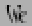

メトリックビュー

メトリックビューは、グリフを並べた時にどのように見えるかを表示し、グリフ間のスペーシングを変更することができます。
メトリックビューがフォントビューのメニューから呼び出された場合、選択されている任意のグリフ (おそらく、最初の 15 個程度) が選択された順番にビューに表示されます。 アウトライン・ビットマップのどちらかのグリフビューから呼び出された場合、編集中のグリフだけが表示されます。 ビットマップグリフビューから (またはビットマップフォントを表示中のフォントビューから) 呼び出されたときはメトリックビューはビットマップ表示となりますが、そこではビットマップのメトリックを編集できません (メトリック編集は、アウトラインを表示しているビューから行わなければなりません)。
メニューバーの下にあるのはテキストフィールドで、ここで追加の Unicode 文字を入力して表示させることができます。
テキストフィールドの下にあるのは用字系・言語の組合せを表示するプルダウンリストで、カーニングペアの構築のときに使用されます (グリフ情報ダイアログの用字系・言語リストに関する記述を参照してください)。
Unicode に含まれない文字を入力したい場合でも、フォントビューからドラッグしてメトリックビューの入力したい位置にドロップすることができます。
ビューの中央部分は表示中のグリフが占めています。アウトライングリフの場合は、これらの大きさはフォントの em ハイトがこの領域にちょうど一致するように設定されます。グリフとグリフの間には灰色の線があり、右側にある次のグリフの原点と左側にある前のグリフの送り幅の位置を区切っています。ベースラインも灰色の線で表示されています。
グリフのうちどれか 1 つがアクティブになっています。そのグリフは緑の線が左 (グリフの原点) 側にあり、青い線が右 (グリフの横幅) 側にあります。この線をドラッグすることにより幅を変更することができます。グリフの左サイドベアリング (lbearing) は、グリフをクリックして左から右に引っ張ることにより変更することができます。緑の線をドラッグして動かせば、このグリフと左にあるグリフの間のカーニングを設定することができます。 (小さなピクセルサイズに対してデバイステーブルを作成したい場合、カーニングペアの詳細ダイアログを使用する必要があります)
 |
 |
アクティブなグリフは、グリフのどこかをクリックすれば変更することができます。
表示エリアの下にあるのはテキストフィールドのグリフ一覧です。 表示されているどの文字でも、このフィールドに新しい値を入力すれば、そのグリフの対応するメトリックの値を変更することができます。
最初のグリフがヘブライ文字またはアラビア文字 (その他任意の右から左に書く言語) として表示される場合、表示エリア全体が右から左に表示されます。
注意 右から左へ書く文字と左から右へ書く文字が混在したテキストを表示する非常に複雑なアルゴリズムが Unicode の規格で定められていますが、このソフトウェアはそれに従っていません。書字方向は最初のグリフだけを見て決めています。
もう一つ注意: 表示エリアでは、アラビア文字の合字や形 (語頭・語尾・語中または独立) の選択は行いません (上のテキストフィールドでは行われるはずですが)。正しい形を見たい場合は、(文字そのものではなく) 具体形に相当する Unicode の符号位置を入力するか、表示(V)→置換一覧(S) コマンドを使うかする必要があります。


表示(V)→縦書き(V) を選ぶと、ウィンドウに縦書きメトリックとカーニングを表示することができます (フォントに縦書きメトリックが存在する場合に限ります。エレメント(L)→フォント情報(F)...→[一般情報]→[]縦書きメトリックが存在 をチェックする必要があります)。
このモードでは縦書きの字送り、カーニングなどを変更できます。
表示されたグリフのどちらかをダブルクリックすると、FontForge はアウトライングリフビューを起動し、そのグリフが編集できる状態になります。
選択中のグリフにアクティブなアンカーポイントが含まれている場合 (これは、そのアンカーポイントに何かが接続していることを意味します)、それらのアンカーポイントを移動して、その結果がどう見えるかを確認することができます。 注意: あるマークに含まれるアンカーポイントを移動した時、その結果は一見直観に反しているように見えます。
グリフを右ボタンでクリックすると、そのグリフに対して定義されている全ての単純位置指定 (GPOS タイプ 1) 機能を表示するポップアップメニューが現れます。
そこからどれか 1 個を選択すると、その機能を適用した結果を見ることができます。
制限事項: FontForge は現在のところ位置の変更のみをサポートしており、送り幅の変更は表示にまったく反映されません。
非 ASCII 文字の入力法
ほとんどの人は、ASCII 文字しかキートップに書かれていないキーボードに制約されています。 良くても ISO 8859-1 文字のわずかなサブセットだけです。 Unicode の全領域の文字を入力するにはどうすればいいでしょうか?
X は、CJK 文字をスタンドアローンのインプットメソッドサーバ経由で入力する洗練されたメカニズムを提供しています。 FontForge は現在、これにある程度対応しています。
この方法の他に、X の多くのバージョンは「合成文字」キーか、何らかの等価な手段を提供しています。 X ソフトウェアは、ネイティブなエンコーディングが何であっても、複数打鍵の列を 1 文字に変換するでしょう。
私のキーボードにはその種のキーはありませんし、X にもその機能はありません。 しかし安価なキーボードを使う我々のために、私はその考えに沿ってある方法を実装しました。 テキスト入力が可能なモードにいるときに F12 キーを押してから決まったやりかたで打鍵を行ってください。 以下の入力方法で、アクセントつき文字が表示できます。
| ` | グレーブアクセント | 0 | リング | " | ダブルグレーブ(またはトノス) | |||
| ' | アキュートアクセント | / | スラッシュ | . | ドットアバブ | |||
| : | ダイエレシス(ウムラウト) | 7 | ブリーブ | , | ドットビロー | |||
| ^ | サーカムフレクス | 6 | キャロン | 5 | セディラ | |||
| ~ | チルダ | _ | マクロン | 4 | オゴネク |
これにより、Â は [F12] ^ A で組み立てられ、ダイエレシスとマクロンのついた A は [F12] : _ A で組み立てることができます。
ギリシャ文字を作成することもできます。 [F12] @ に続けて以下のとおり入力すると表の文字が入力できます。
| A | アルファ | B | ベータ | C | カイ | |||
| D | デルタ | E | イプシロン | F | ファイ | |||
| G | ガンマ | H | イータ | I | イオタ | |||
| J | (テクニカル) シータ | K | カッパ | L | ラムダ | |||
| M | ミュー | N | ニュー | O | オミクロン | |||
| P | パイ | Q | シータ | R | ロー | |||
| S | シグマ | T | タウ | U | ウプシロン | |||
| V | ファイナルシグマ | W | オメガ | X | クサイ | |||
| Y | プサイ | Z | ゼータ |
これは Symbol フォントで使用されている対応です。(小文字も対応は同じなので、[F12] @ a と入力すると小文字のアルファが入力できます)。 アクセントつきギリシャ文字を組み立てることもできます。 [F12] @ " A はトノスつき大文字アルファとなります。
それに加え、以下の特殊文字を組み立てることができます。
| [F12] <space> | <非分離スペース> | [F12] * | ° | [F12] @ * | <ビュレット> | |||
| [F12] @ <space> | <em スペース> | [F12] # | £ | [F12] @ # | ￥ | |||
| [F12] $ | <ユーロ> | [F12] @ $ | ¢ | [F12] ! | ¡ | |||
| [F12] + | ± | [F12] - | <ソフトハイフン> | [F12] @ - | <en ダッシュ> | |||
| [F12] @ . | ・ | [F12] 7 2 | ½ | [F12] ; | . . . | |||
| [F12] < | <小さいか等しい> | [F12] > | <大きいか等しい> | [F12] @ > | ∴ | |||
| [F12] = | <クオートダッシュ> | [F12] ? | ¿ | [F12] A | Å | |||
| [F12] C | Ç | [F12] H | <右向き人指し指> | [F12] O | <OE 合字> | |||
| [F12] P | ¶ | [F12] [ | <左一重引用符> | [F12] ] | <右一重引用符> | |||
| [F12] \ | <左ギュメ> | [F12] @ \ | <左一重ギュメ> | [F12] a | å | |||
| [F12] c | ç | [F12] f | <女性序数記号> | [F12] g | © | |||
| [F12] h | <左向き人指し指> | [F12] m | <男性序数記号> | [F12] o | <oe 合字> | |||
| [F12] p | µ | [F12] r | ® | [F12] s | ß | |||
| [F12] t | <商標記号> | [F12] z | <ロング s> | [F12] { | <左二重引用符> | |||
| [F12] } | <右二重引用符> | [F12] | | <右ギュメ> | [F12] @ | | <右一重ギュメ> |
これでもまだ、Unicode のほとんどの文字は入力できません。 それでも、[F12] を 2 回押すと起動するダイアログで、Unicode の任意の文字を選択して入力することができます。
間違って [F12] キーを押してしまった場合、Escape キーを押すとアクセントモードを抜けることができます。
文字クラスによるカーニング
同じカーニングが適用されるグリフのクラスを定義することが良策であることがしばしばあります。例えば、A と À, Á, Â, Â, Ã, Ä の各文字のグリフはおそらく同じカーニングが適用でき (ただし、o と ô は、T の後ろに来たときのカーニングが全く異なるだろうことに注意してください)、上に挙げた“A”の類にそれぞれ別々のカーニングペアを定義せずに、同じようにカーニングを行う文字のクラスに対して定義を行うことができるでしょう。

メトリック(M)→クラス毎のカーニング(N)... コマンドが、それを行うインターフェイスです。このコマンドはフォントに現在定義されているカーニングクラスを表示したダイアログを起動します (その際、それがアクティブになるスクリプトに従ってラベルづけを行います)。新しいクラスの作成、既存のクラスの削除や既存のクラスの変更ができます。
 各カーニングクラスには、それがアクティブになる用字系・言語の組合せと、その機能に対して OTF で標準定義されている 1 組のフラグの設定が必要です。
各カーニングクラスには、それがアクティブになる用字系・言語の組合せと、その機能に対して OTF で標準定義されている 1 組のフラグの設定が必要です。
その下にあるのはより興味深い情報です。1 個のカーニングクラスは、実際には 2 個のクラスの組からなります—— 1 つはペアの先頭のグリフの組、もう 1 つはペアの 2 番目のグリフの組です。それぞれのクラスのリストの下には新クラスの追加・既存クラスの編集・削除を行うためのボタンがあります。個々のグリフクラスはグリフ名を空白で区切ったリストです。
[新規(N)...] または [編集(E)...] を押すと、グリフ名のリストがあるテキストフィールドを含む別のダイアログが表示されます。グリフ名をキー入力するか、[設定(S)] ボタンを押してフォントビューで選択されたグリフの名前リストを使用することができます。同様に、[選択] ボタンを押すとフォントビューの選択内容を、そのグリフ名の一覧と同じものに設定します。
カーニングクラスは非常に複雑になることもあります。“グリフを選択”フィールドでグリフ名をタイプすることにより、グリフを検索することができます。その結果、そのグリフが含まれているクラスがハイライト表示されます。
通例、クラス 0 は特別な意味を持ちます。これをユーザが設定することはほとんど無いでしょうが、他のどのクラスにも含まれていない全ての文字の集まりのことです。OpenType では、最初の文字のクラス 0 を設定することができ、通常どおりにふるまいます。
各クラスの下にはカーニング値の一覧表があります。最初のグリフクラスとして利用可能な物は縦に並び、2 番目のグリフクラスは横に並んでいます。クラスを (上のクラスリストで) どれか 1 個選択すると、カーニング値の表示はそのクラスの欄までスクロールします。マウスを表示欄の上に移動してしばらく待つと、その欄の文字クラスの組合せを構成するグリフを表示するポップアップウィンドウが表示されます。表示欄のカーニング値の上でクリックすると、ダイアログはカーニングダイアログに変更されます。
 カーニングダイアログは各クラスの代表グリフを表示し、そこでそれらグリフ字 (各クラスに含まれる他のグリフ全ての組合せを含む) の間のカーニングを調整することができます 。どのグリフを表示するかはプルダウンメニューで選ぶことができます。新しいカーニングオフセットはキーボードで数値入力することもできますし、2 番目のグリフをクリックしてからドラッグすることによっても設定可能です。
カーニングダイアログは各クラスの代表グリフを表示し、そこでそれらグリフ字 (各クラスに含まれる他のグリフ全ての組合せを含む) の間のカーニングを調整することができます 。どのグリフを表示するかはプルダウンメニューで選ぶことができます。新しいカーニングオフセットはキーボードで数値入力することもできますし、2 番目のグリフをクリックしてからドラッグすることによっても設定可能です。
また、“デバイステーブル”というものを作成することができます。この名前からはそれが何だかよく分かりません。フォントを小さなピクセルサイズでラスタライズする時、丸め誤差が非常に重要になります。とくにカーニングでは、丸めの対象になるのがアウトラインの位置 (それらをピクセルグリッドに合わせるため)と、グリフの送り幅およびカーニング値そのものの 3 つあるため、事態はとくに深刻です。その結果、150 ピクセルで完璧にカーニングが行われていたものが 12 ピクセルで近すぎたり遠すぎたりすることになります。
 |
|
150 ピクセルでのカーニング |
12 ピクセルでのカーニング |
もちろん、カーニング値を微妙に調節して、12 ピクセルで正しく見えるようにできたはずですが、今度は 14 ポイントで問題が起こるでしょう。そういうわけで、OpenType ではデバイステーブルという概念を導入し、このテーブルを用いて特定のポイントサイズで小さな修正ができるようにしています。単純にディスプレイサイズをよく使われる小さい値 (例えば 10-24) に設定して、カーニングを目で確かめてください。醜い結果が得られた場合、“デバイステーブル補正”フィールドに値を入力すると、指定された表示サイズのスペーシング (だけ) が指定したピクセル数だけ変更されます。上の例では、12 ピクセル表示では 1 ピクセルの補正が適切でしょう。
小さなピクセルサイズは目で確かめるのが困難なため、拡大率を変更することができます (同じサイズでラスタライズされますが、各ピクセルが 2 倍に拡大されます)。
デバイステーブルは他の多数の場合にも作成することができます。上の例はカーニングクラスに対するものでした。カーニングペアにも、上のカーニングクラスダイアログとよく似た エレメント(L)→カーニングペアの詳細 ダイアログが用意されています。